La Casa ArteAnc
El patio orienta la visita. Las salas reúnen los materiales. Al norte, el Santuario precolombino concentra la piedra, el bronce y la luz.
Planta y coordenadas
Siete espacios principales y una galería sur abierta de distribución. Patio de 10 × 10 m, recepción centrada y Santuario al norte.

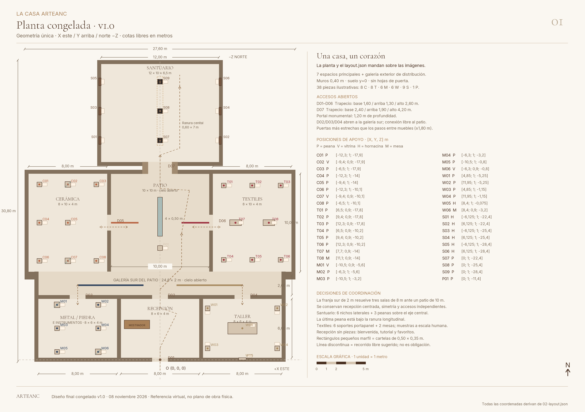
AMPLIAR LÁMINALa geometría única
Origen en el umbral sur; X al este, Y arriba y norte en −Z. Medidas interiores libres y muros de 0,40 m. La galería sur conserva 2 m libres entre las tres salas del sur y el patio.

El recorrido, a la vista
Accesos trapezoidales abiertos, materiales mates y final de la tarde. Las ocho perspectivas utilizan una cámara de referencia a 1,60 m.

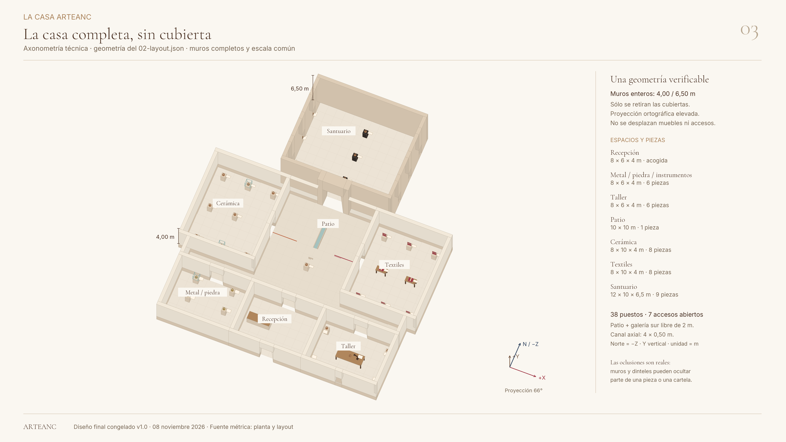
AMPLIAR LÁMINAUna casa, un corazón
Lectura del conjunto y de sus conexiones. Las cubiertas se omiten para mostrar la organización; el patio y la galería sur son los espacios permanentemente abiertos al cielo.

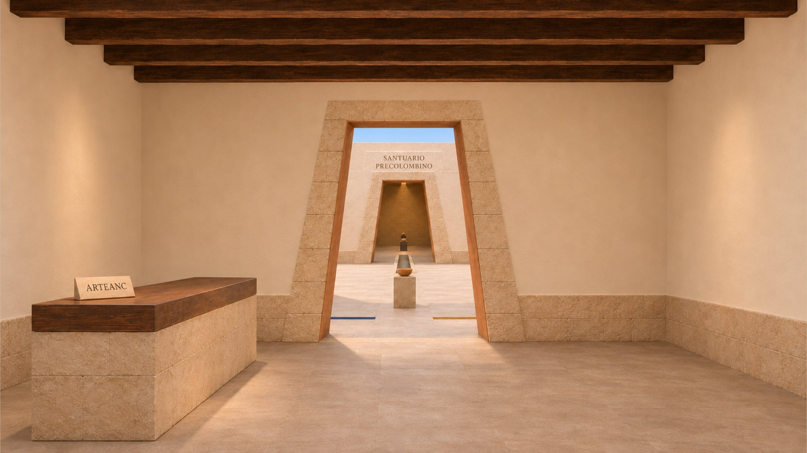
AMPLIARUmbral y recepción
La bienvenida y los favoritos quedan junto al eje que conduce al patio.

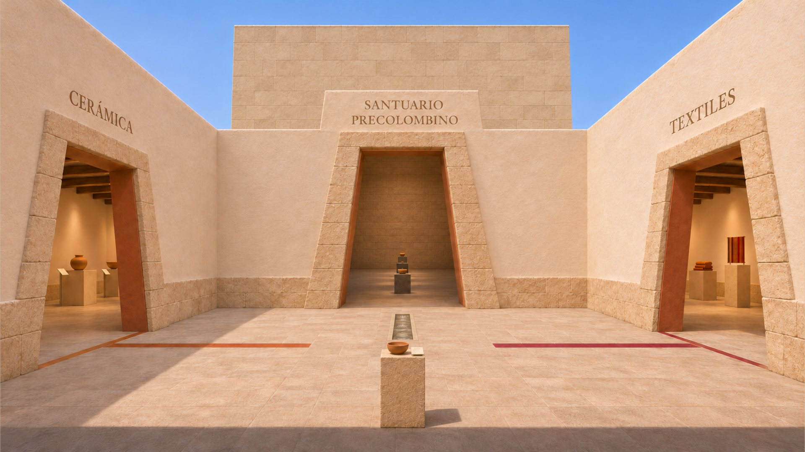
AMPLIARPatio central
Cerámica al oeste, Textiles al este. La pieza de la semana y el canal orientan la mirada al Santuario.

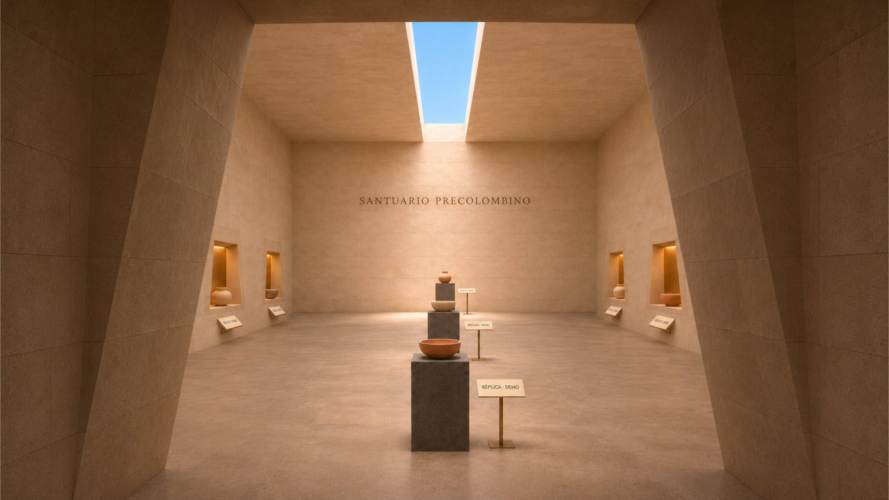
AMPLIAREl portal profundo
Una transición en sombra antes de la luz cenital; sin hojas ni accesos adicionales.

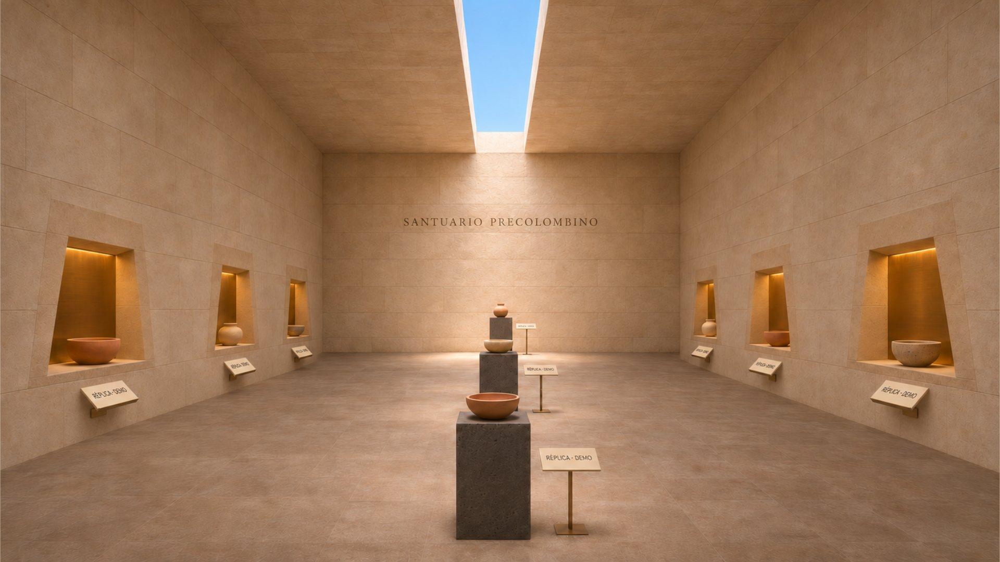
AMPLIARSantuario precolombino
Seis hornacinas laterales y tres peanas sobre el eje. La última se sitúa bajo la ranura.

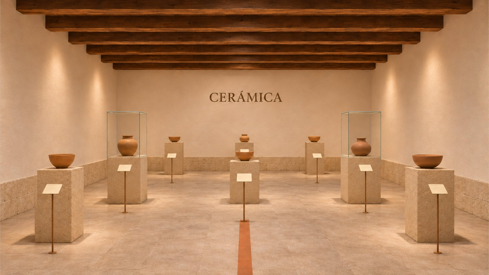
AMPLIARCerámica
Ocho posiciones, piedra clara y terracota. Luz suave de galería y objetos a escala humana.

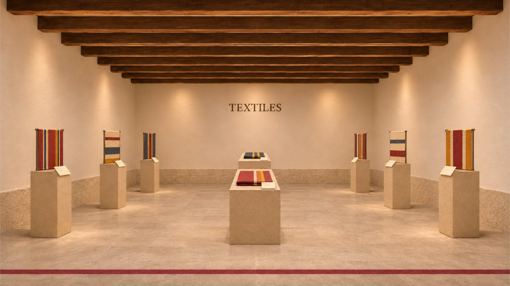
AMPLIARTextiles
Seis soportes para muestras verticales y dos mesas; cochinilla como acento de orientación.

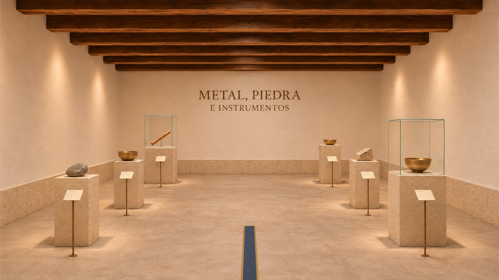
AMPLIARMetal, piedra e instrumentos
Seis posiciones de exhibición en el ala suroeste, con acceso propio desde la galería del patio.

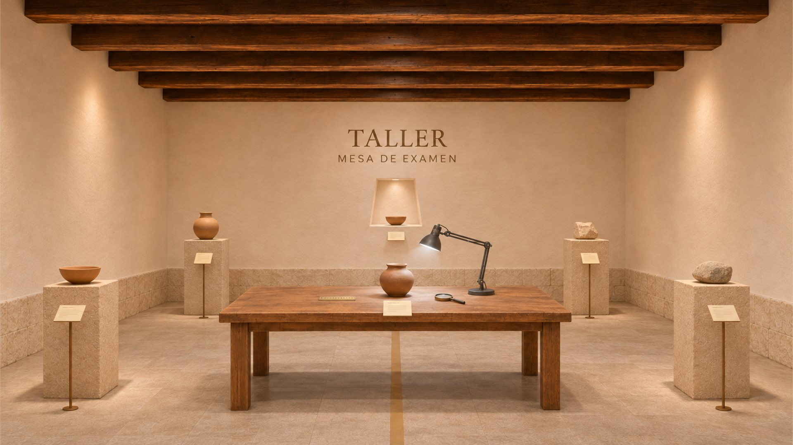
AMPLIARTaller y mesa de examen
Una copia de la pieza se examina con luz neutra, foco rasante, lupa y regla de escala.
La información junto a la pieza
Tipos de pieza visibles, datos desconocidos sin inventar y acciones explícitas. Estas láminas muestran componentes y estados de ejemplo.

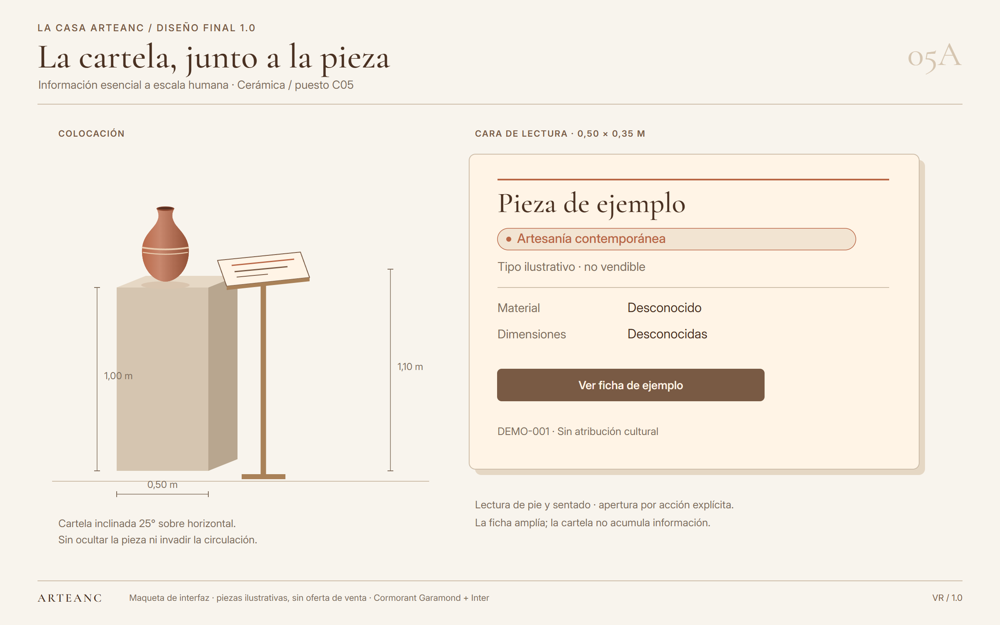
AMPLIARCartela
Información esencial, tipo de pieza y acceso a la ficha ampliada.


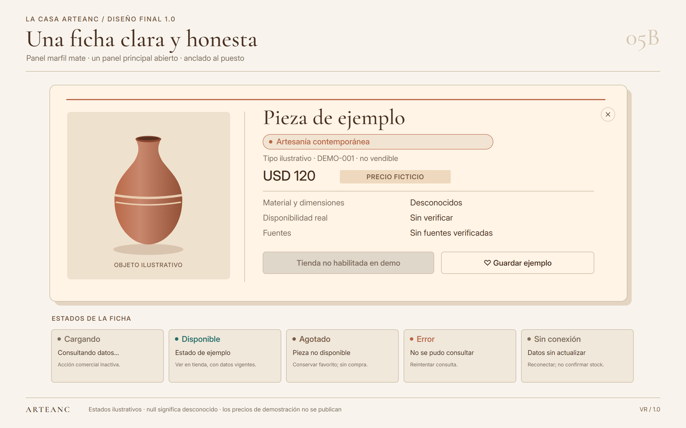
AMPLIARFicha y estados
Cargando, disponible, agotado, error y sin conexión. Precio ficticio claramente separado de un dato comercial.


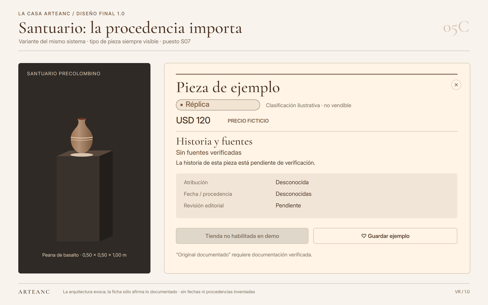
AMPLIARHistoria y fuentes
La etiqueta de tipo tiene prioridad. La ausencia de documentación se declara, sin completar una historia imaginada.


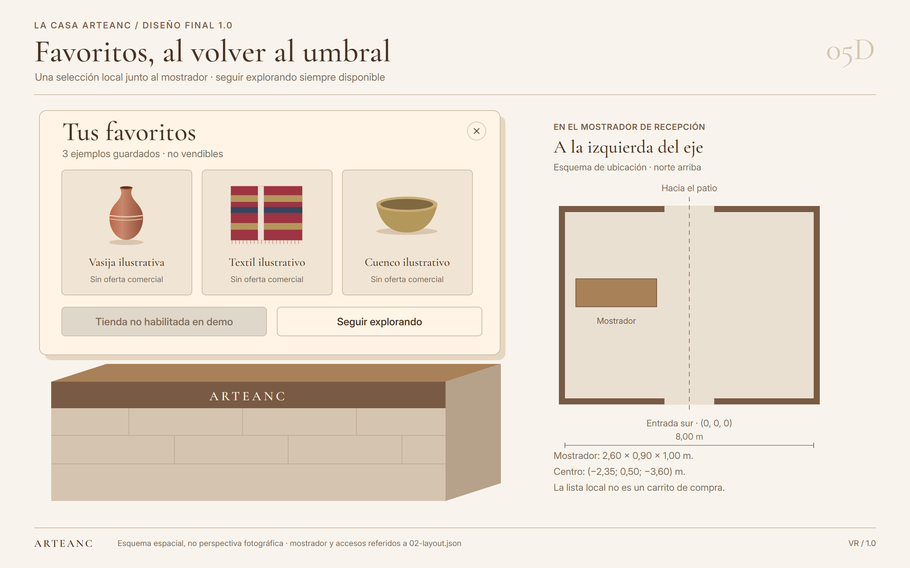
AMPLIARFavoritos en recepción
Revisar la selección local y decidir cómo continuar. Un favorito no confirma una compra ni reserva stock.


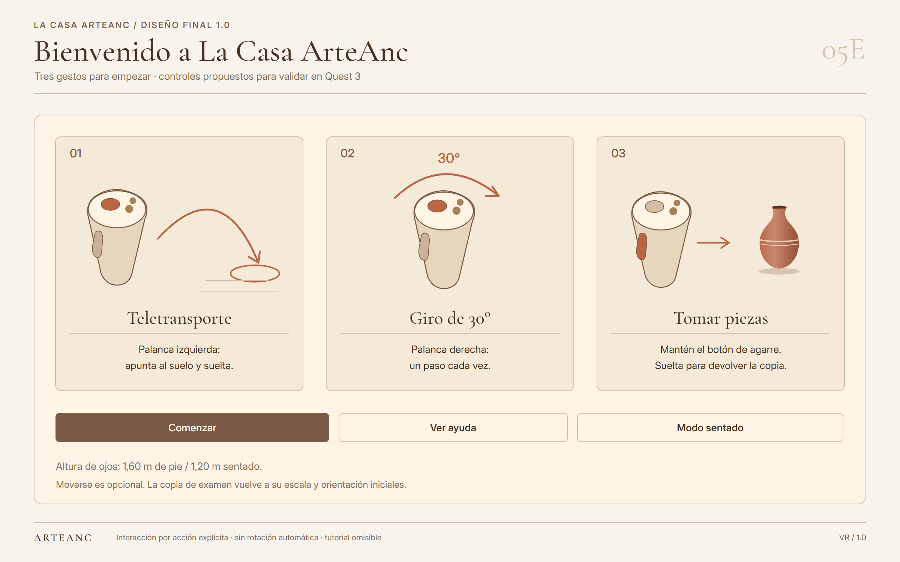
AMPLIAR LÁMINAEmpezar a explorar
Teletransporte, giro de 30° y toma de una copia restaurable. Controles y lectura pendientes de validación en visor.

Un kit, dos escalas
Los siete módulos de la casa se completan con portal monumental, hornacina de bronce, peana de basalto y ranura cenital.

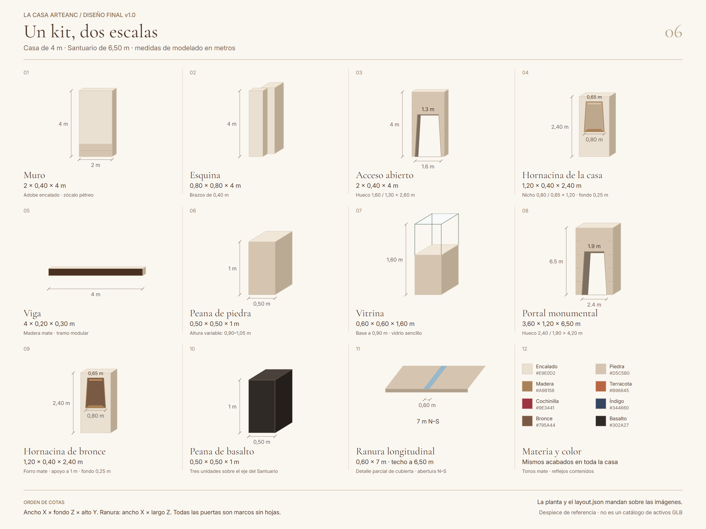
AMPLIAR LÁMINADespiece de referencia
Cotas de cada módulo y paleta común. Las posiciones, los apoyos y las conexiones se construyen desde el layout.

Construir desde una sola referencia
La especificación reúne materiales, luz, datos, decisiones de coordinación, verificación de imágenes y pruebas de aceptación.
Datos y comprobaciones
Las piezas y los precios son demostraciones no vendibles. El rendimiento, la lectura y la navegación deben comprobarse en un Quest 3 real.